Snakes of Laos
91 snake species are recorded in Laos in SnakeList: 27 venomous and 64 non-venomous, from 10 families.
- 91species
- 27venomous
- 64non-venomous
- 10families
These totals count the snakes SnakeList records as living in Laos. A species counts if it is recorded anywhere in the country, so not every snake lives in every region.
Species
Showing 91 species
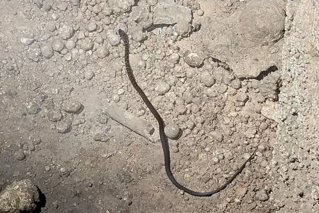
Andrea's KeelbackHebius andreae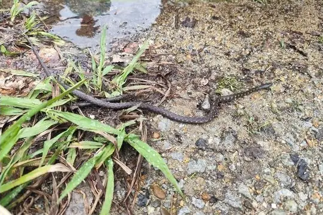
Annam KeelbackHebius annamensis Ashy Kukri SnakeOligodon cinereus
Ashy Kukri SnakeOligodon cinereus Asian Vine SnakeAhaetulla prasina
Asian Vine SnakeAhaetulla prasina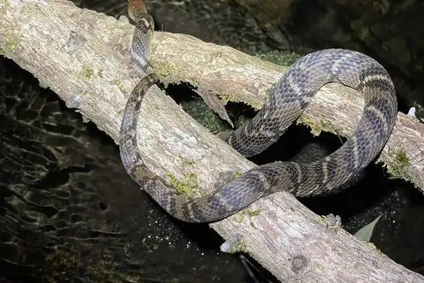
Asiatic Water SnakeTrimerodytes aequifasciatus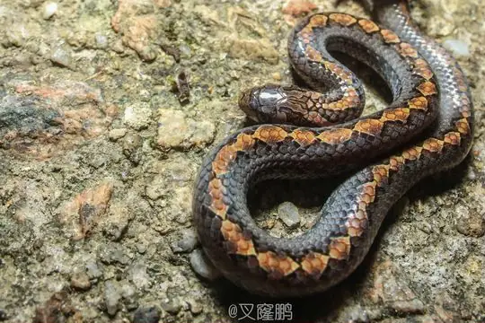
Assam Kukri SnakeOligodon catenatus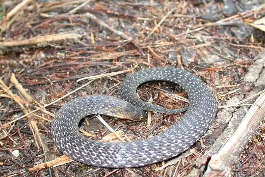
Assam Mountain SnakePlagiopholis nuchalis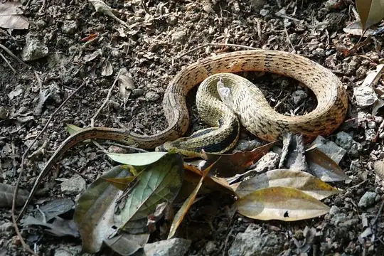
Bamboo SnakePseudoxenodon bambusicola Banded KraitBungarus fasciatus
Banded KraitBungarus fasciatus Banded Wolf SnakeLycodon fasciatus
Banded Wolf SnakeLycodon fasciatus- No photo yetBangkok Mud SnakeEnhydris jagorii
 Banks' Wolf SnakeLycodon banksi
Banks' Wolf SnakeLycodon banksi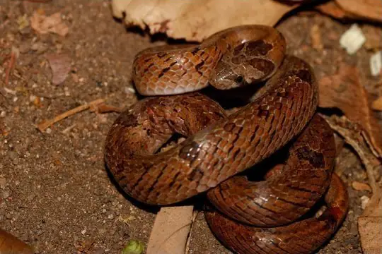
Barron's Kukri SnakeOligodon barroni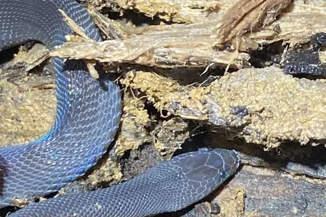
Bearded snakeFimbrios klossi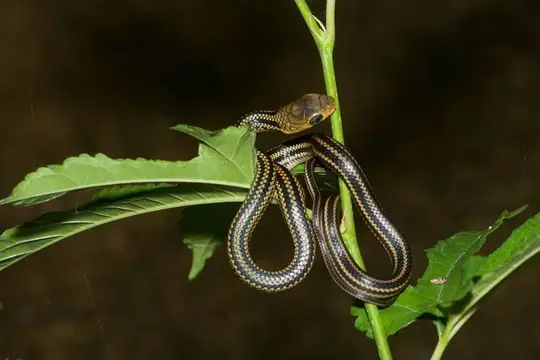
Black-striped Rat SnakePtyas dhumnades Blanford's Bridal SnakeLycodon davisonii
Blanford's Bridal SnakeLycodon davisonii Blue KraitBungarus candidus
Blue KraitBungarus candidus Boie's Mud SnakeHypsiscopus plumbea
Boie's Mud SnakeHypsiscopus plumbea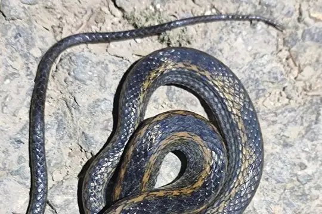
Boulenger's KeelbackHebius boulengeri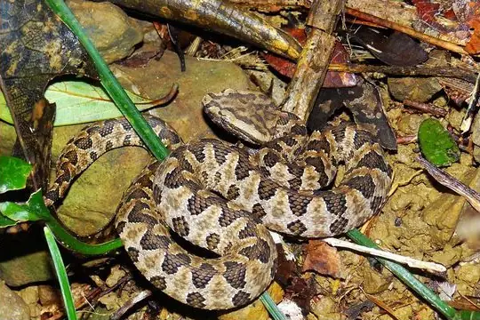
Brown Spotted PitviperProtobothrops mucrosquamatus Burmese PythonPython bivittatus
Burmese PythonPython bivittatus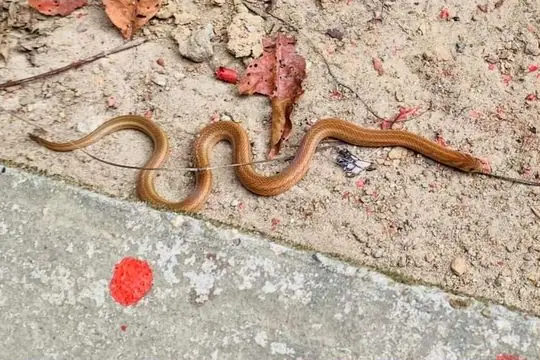
Cantor's Kukri SnakeOligodon cyclurus- No photo yetCheckered KeelbackXenochrophis piscator
 Chequered KeelbackFowlea piscator
Chequered KeelbackFowlea piscator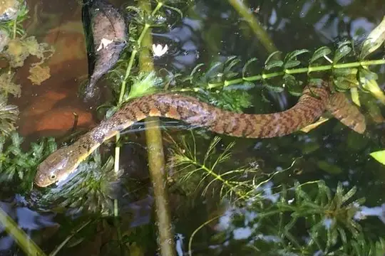
Chinese Keelback Water SnakeTrimerodytes percarinatus Chinese Mountain Pit ViperOvophis monticola
Chinese Mountain Pit ViperOvophis monticola- No photo yetClouded Reed SnakeCalamaria nebulosa
 Collared Reed Snake (pavimentata)Calamaria pavimentata
Collared Reed Snake (pavimentata)Calamaria pavimentata Common Wolf Snake (capucinus)Lycodon capucinus
Common Wolf Snake (capucinus)Lycodon capucinus- No photo yetDavid's Wolf SnakeLycodon davidi
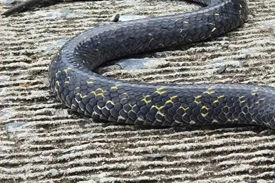
Delacour's Mountain SnakePlagiopholis delacouri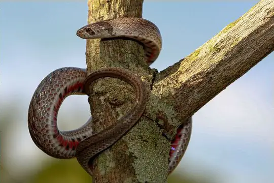
Deuve's Kukri SnakeOligodon deuvei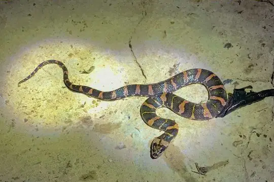
Deuve's Water SnakeHomalopsis nigroventralis- No photo yetDurand's Mountain Stream SnakeOpisthotropis durandi
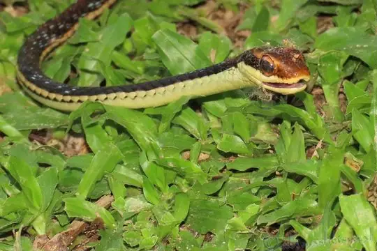
Eastern bronzeback tree snakeDendrelaphis proarchos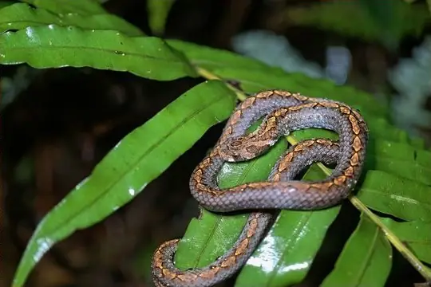
Eberhardt's Kukri SnakeOligodon eberhardti Fasciolated Kukri SnakeOligodon fasciolatus
Fasciolated Kukri SnakeOligodon fasciolatus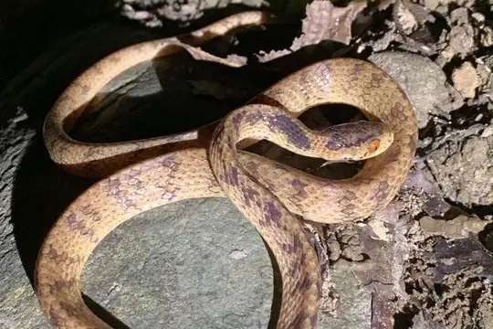
Formosa Slug SnakePareas formosensis Green Cat SnakeBoiga cyanea
Green Cat SnakeBoiga cyanea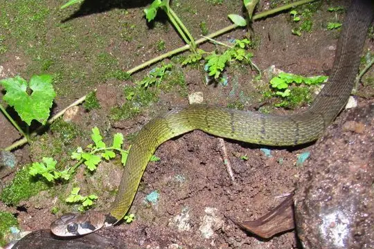
Green KeelbackRhabdophis nigrocinctus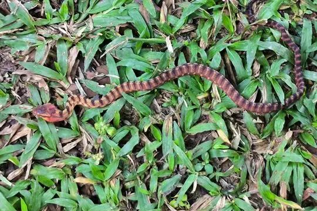
Guangxi Cat SnakeBoiga guangxiensis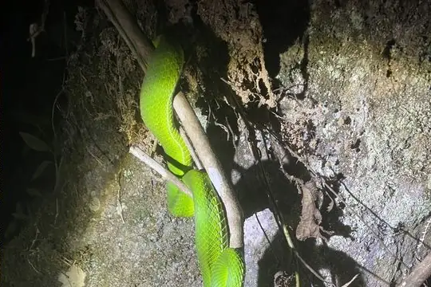
Gumprecht's Pit ViperTrimeresurus gumprechti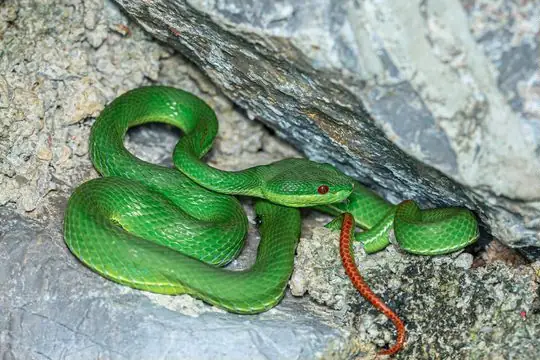
Guo's Green Pit ViperTrimeresurus guoi Indo-Chinese Rat SnakePtyas korros
Indo-Chinese Rat SnakePtyas korros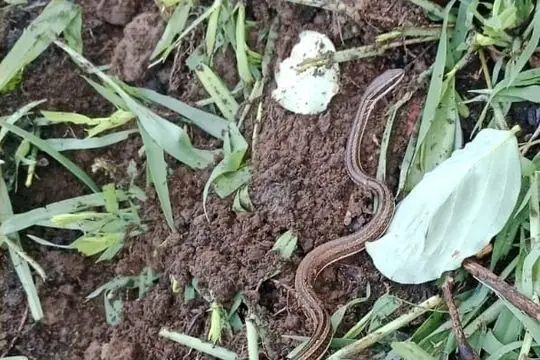
Indo-Chinese Sand SnakePsammophis indochinensis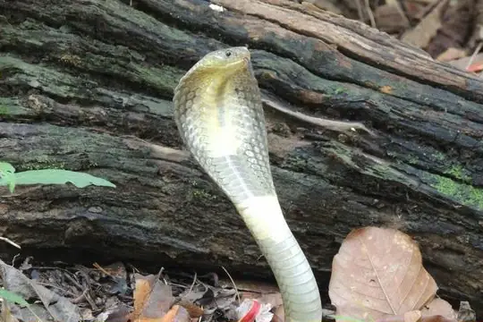
Indo-chinese Spitting CobraNaja siamensis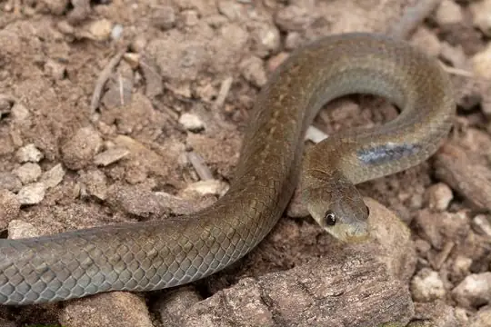
Inornate Kukri SnakeOligodon inornatus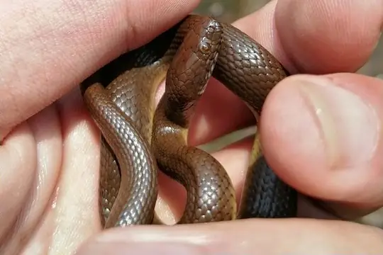
Jingdong Water SnakeTrimerodytes yapingi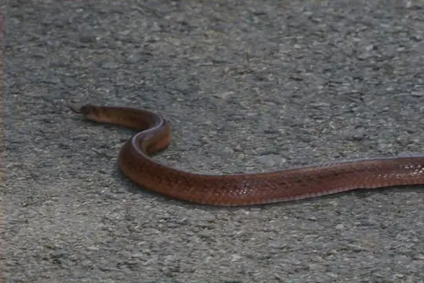
Joynson's Kukri SnakeOligodon joynsoni Keeled Rat SnakePtyas carinata
Keeled Rat SnakePtyas carinata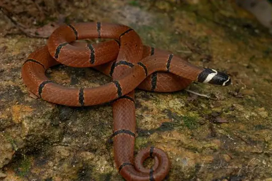
Kellog's Coral SnakeSinomicrurus kelloggi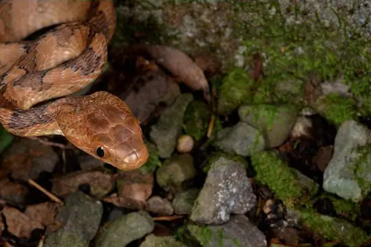
Kelung Cat SnakeBoiga kraepelini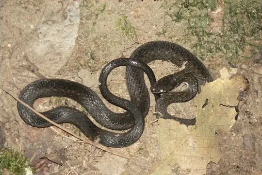
Khasi KeelbackHebius khasiensis King CobraOphiophagus hannah
King CobraOphiophagus hannah Kramer's Pit ViperTrimeresurus macrops
Kramer's Pit ViperTrimeresurus macrops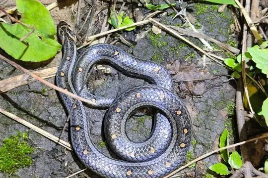
Lacroix Kukri SnakeOligodon lacroixi Laotian Wolf SnakeLycodon laoensis
Laotian Wolf SnakeLycodon laoensis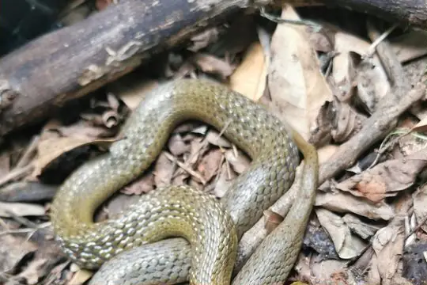
Leonard's KeelbackRhabdophis leonardi Malayan Pit ViperCalloselasma rhodostoma
Malayan Pit ViperCalloselasma rhodostoma Malayan WhipsnakeAhaetulla mycterizans
Malayan WhipsnakeAhaetulla mycterizans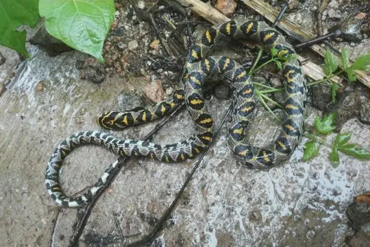
Mandarin RatsnakeEuprepiophis mandarinus Many-spotted Cat SnakeBoiga multomaculata
Many-spotted Cat SnakeBoiga multomaculata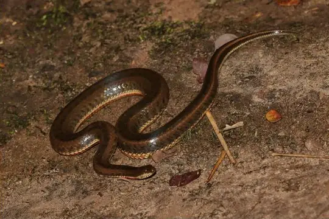
Mekong Mud SnakeEnhydris subtaeniata Monocled CobraNaja kaouthia
Monocled CobraNaja kaouthia Mountain Slug SnakePareas margaritophorus
Mountain Slug SnakePareas margaritophorus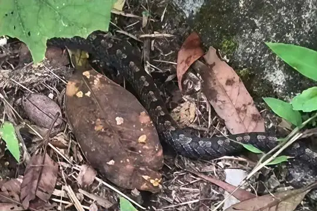
Nagao Kukri SnakeOligodon nagao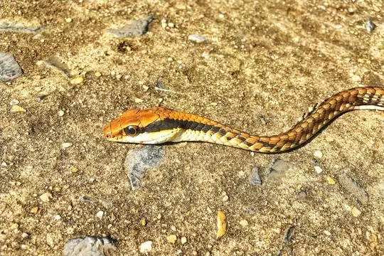
Nganson BronzebackDendrelaphis ngansonensis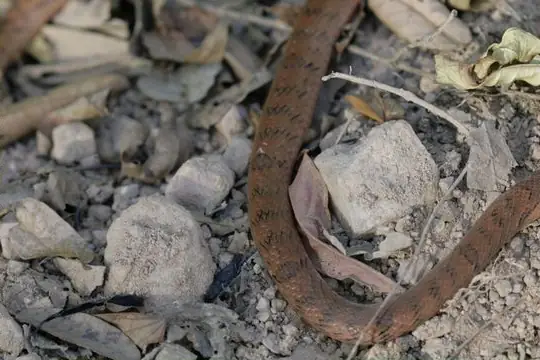
Ocellated Kukri SnakeOligodon ocellatus Pope's Bamboo Pit ViperTrimeresurus popeiorum
Pope's Bamboo Pit ViperTrimeresurus popeiorum Radiated RatsnakeCoelognathus radiatus
Radiated RatsnakeCoelognathus radiatus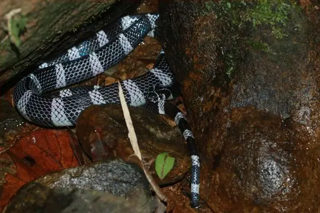
Red River KraitBungarus slowinskii Red-banded SnakeLycodon rufozonatus
Red-banded SnakeLycodon rufozonatus Red-tailed Pipe SnakeCylindrophis ruffus
Red-tailed Pipe SnakeCylindrophis ruffus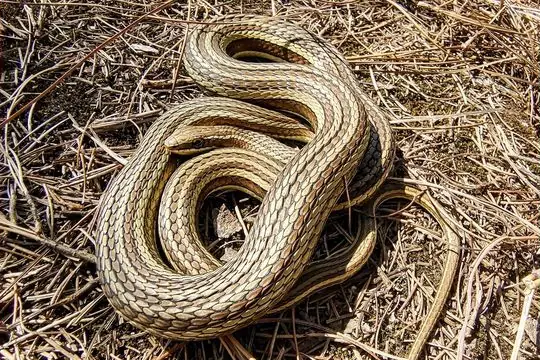
Sand Snake (condanarus)Psammophis condanarus- No photo yetSouthern Red-banded SnakeLycodon meridionale
 Speckled Coral Snake (maculiceps)Calliophis maculiceps
Speckled Coral Snake (maculiceps)Calliophis maculiceps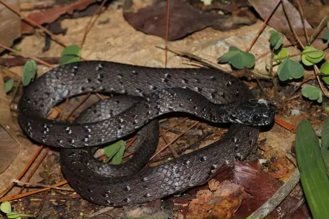
Spotted Slug SnakePareas macularius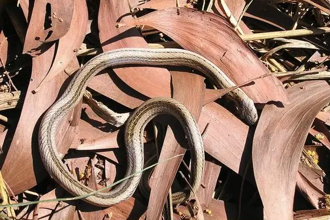
Striped Kukri SnakeOligodon taeniatus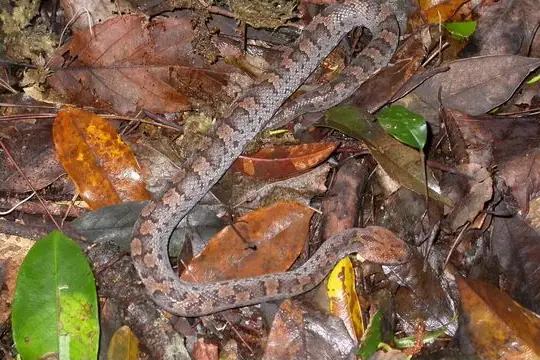
Taiwan Mountain PitviperOvophis makazayazaya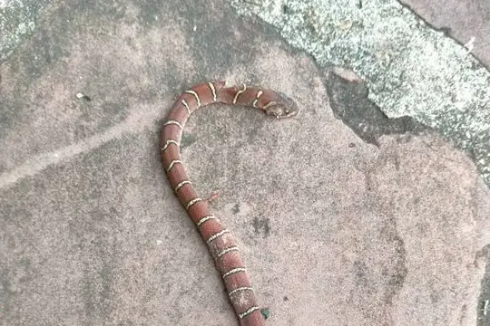
Teynié’s Kukri SnakeOligodon teyniei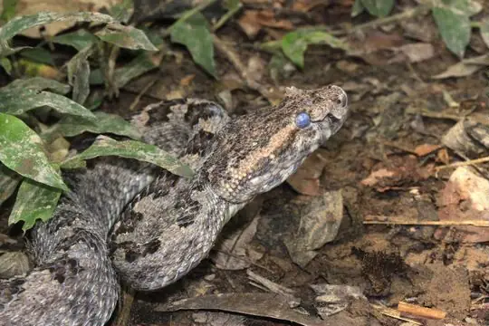
Three Horned-scaled PitviperProtobothrops sieversorum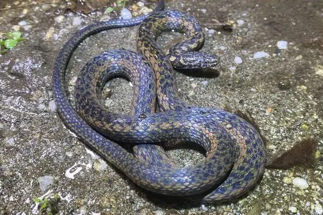
Vietnam Water SnakeHebius chapaensis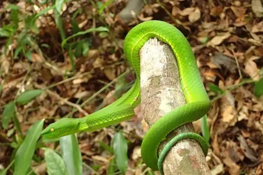
Vogel's Pit ViperTrimeresurus vogeli White-banded Wolf SnakeLycodon septentrionalis
White-banded Wolf SnakeLycodon septentrionalis White-headed Blind SnakeIndotyphlops albiceps
White-headed Blind SnakeIndotyphlops albiceps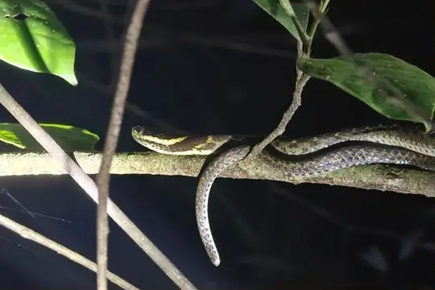
White-lipped KeelbackHebius leucomystax White-lipped PitviperTrimeresurus albolabris
White-lipped PitviperTrimeresurus albolabris Yellow-spotted Keelback Water SnakeFowlea flavipunctatus
Yellow-spotted Keelback Water SnakeFowlea flavipunctatus- No photo yetYunnan Reed SnakeCalamaria yunnanensis
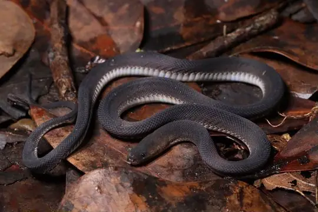
Ziggy Stardust SnakeParafimbrios lao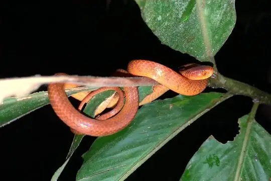
Pareas geminatus
No snakes in Laos match.
Laos’s snakes in numbers
- Families: Colubridae 57, Viperidae 11, Elapidae 8, Homalopsidae 4, Pareidae 4, Psammophiidae 2, Xenodermidae 2, Cylindrophiidae 1, Pythonidae 1, Typhlopidae 1.
- 4 are recorded in no other country in SnakeList: Banks' Wolf Snake, Clouded Reed Snake, David's Wolf Snake, Teynié’s Kukri Snake.
States and provinces
The states and provinces where SnakeList records snakes, with how many species each has. Each page has its families, venomous snakes, the species found only there, its cities and neighbours.
- Bokeo 5 species
- Bolikhamsai 1 species
- Champasak 1 species
- Khammouane 3 species
- Luang Namtha 1 species
- Luang Prabang 4 species
- Sainyabuli 2 species
- Sekong 1 species
- Vientiane 8 species
- Vientiane Prefecture 4 species
No place matches that.
Cities
Its biggest cities, biggest first. Snakes are recorded by state or province, not by city, so each city page shows the snakes of the state or province it is in.
- Vientiane Vientiane Prefecture
No place matches that.